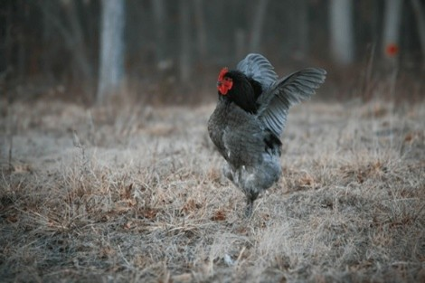

Hühner kommunizieren miteinander mit Geräuschen und Bewegungen.
Sie gackern (Video 1) zum Beispiel, um mit anderen Hühnern zu „sprechen“.
Wenn Gefahr in der Nähe ist, machen sie besondere Warnrufe (Video 2), damit
die anderen Hühner aufpassen.
Auch mit ihrem Körper zeigen sie
etwas: Wenn sie ihre Federn aufplustern oder mit den Flügeln schlagen (Bild 1),
kann das eine Warnung oder Drohung sein. In einer Gruppe gibt es
ausserdem eine Rangordnung, die man Hackordnung nennt. So wissen
die Hühner, welches Huhn stärker ist und wer zuerst fressen darf.